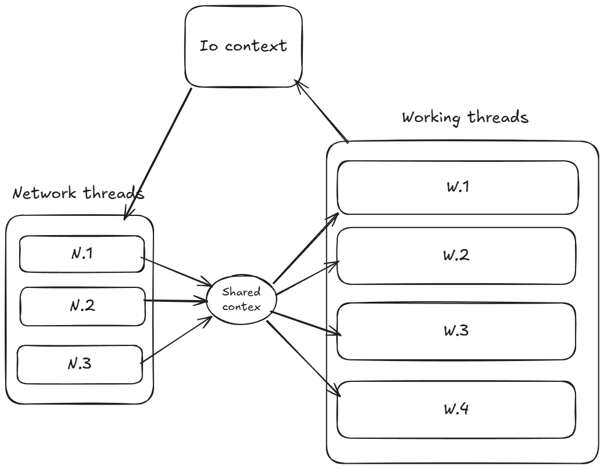

In a chat app, messages arriving out of order is not acceptable - you expect what you sent first to show up first on the other side. My server is multithreaded, so I had to find where order is kept in the pipeline and where it breaks.
I built the chat server as multithreaded so it can handle many requests at once. The point is faster processing and lower latency on responses. That only works if the design still behaves correctly under threads. Besides the usual mutexes around shared data, there are domain rules that also have to hold.
The rule is about delivery order between two people, not about socket writes in general. If the sender puts message 1 on the wire before message 2, the recipient must see message 1 first. In a multithreaded server that is not automatic: two requests can be processed at the same time, so message 2 can be saved and pushed to the recipient before message 1 finishes. The design has to enforce send order per sender.
Overview of the flow of processing requests
A request lands on one of the network threads that run io_context handlers - the event loop from Boost.Asio. I kept that work light on purpose so backpressure sits in application queues instead of only in OS buffers. That way the server can apply its own rules on traffic.
After ingress on the network thread, the request is pushed into the shared context - a queue protected by a mutex and condition variable. Worker threads are not a thread pool: they block on wait until notify wakes one of them, then they pop and handle the request. The worker runs business logic and database work. Depending on the request type, it may need to write back to a client. If so, it schedules the write on the io_context again; a network thread runs that handler and the round trip ends.

io_context runs read/write handlers on network threads (N.1-N.3). They push work into a shared FIFO queue. Worker threads (W.1-W.4) do business logic and the database, then schedule write responses back on the same io_context.How ordering is broken in this design
If a client sends two requests quickly, TCP still delivers the bytes in order. The server also needs a protocol that turns those bytes into separate requests - I use WebSocket for that.
After TCP, I need the same guarantee in the application. I use one read operation per client at a time - only one message is read from the buffer at once. Up to here the server keeps request order on the network threads: as the pipeline runs, each finished read pushes into the shared context and the network thread starts the next read. The second read pushes the next request into the queue.
The shared context is a queue, so pops are FIFO. Two workers will pop in order; that part is guaranteed. What is not guaranteed is that the thread that pops first will finish before the other thread pops the next request. The OS can switch threads whenever it wants - you cannot rely on completion order.
So the problem shows up in the worker threads: several requests from the same client, for types where order matters for the business logic.
Solution
The blunt fix is one request per client at a time on the workers. That works, but then unordered requests wait behind ordered ones - typing waits behind a slow message insert, and so on.
Instead I split request types into ordered and not ordered. For one client, workers can still take multiple requests from the queue when the type is not ordered. Ordered types (message send and first message) go through the stricter path.
Technical implementation
I protect the worker scope so two ordered requests from the same client never run there at once. Sync happens on enter and on exit. For each ordered request I check a flag before dispatching to a worker. If one is already in flight, the new request waits in a per-client queue until the previous one is done - and only after that request’s response is enqueued on the write queue, which serializes async_write on that socket.
The React client has its own merge layer for what the user sees while fetches and live traffic race. I wrote about that in A Client State Machine for Chat Message Order.